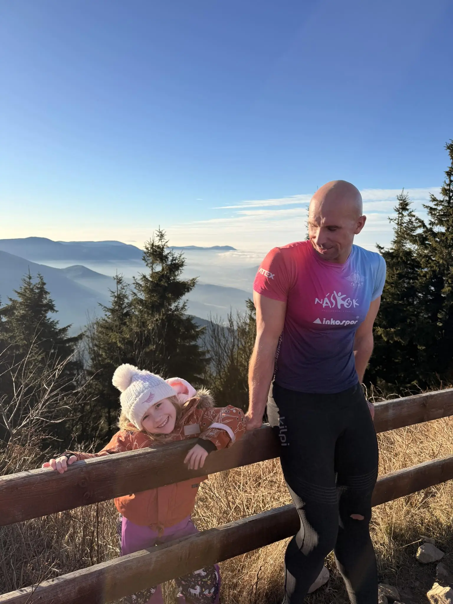
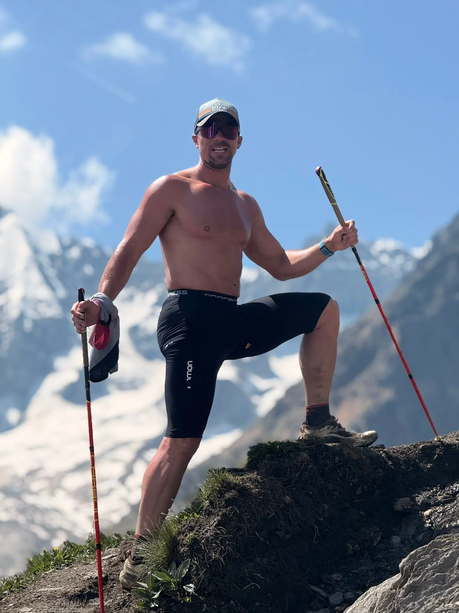

Osobní tréninky
Silový a kondiční trénink ve fitness nebo venku dle vašich možností.
Kondiční trenér | osobní trenér | běžecký trenér
Sport a pohyb jsou součástí mého života mnoho let. Ve své práci propojuji kondiční trénink, běh, sílu, regeneraci a zdravý přístup k tělu.
Mou filozofií je princip KALOKAGATHIA – antická myšlenka harmonie těla a mysli. Už od školy mě fascinovala představa, že člověk může být nejen výkonný, ale zároveň zdravý, spokojený a psychicky silný.
Nejde mi pouze o tvrdý trénink. Důležité je také:
Věřím, že pohyb má člověka posouvat dál — ne ničit.
Pracuji s hobby sportovci, běžci, výkonnostními atlety i lidmi, kteří chtějí lépe fungovat v běžném životě. Každý člověk potřebuje individuální přístup a smysluplně nastavený trénink.
Pokud si nebudete vědět rady, rád vám pomohu najít správný směr.

„Kvalita nad chaosem."
Silový a kondiční trénink ve fitness nebo venku dle vašich možností.
Individuální i skupinové běžecké tréninky, technika běhu, příprava na závody.
Individuální plán podle vašich cílů, výkonnosti a časových možností.
Rozvoj síly, rychlosti, stability a vytrvalosti.
Stabilizační systém, hluboký střed těla, mobilita a prevence bolesti.
Asistovaný strečink, sportovní masáže, kinesiotaping.
Sportovní výživa, redukce hmotnosti, zdravé hubnutí a regenerace.
Běžecké workshopy, kondiční kempy a sportovní akce pro firmy i skupiny.
Osobní trénink — 60 min
pravidelná dlouhodobá spolupráce
700 Kč
Individuální trénink — 70 min
technika, konzultace, detailní vedení
900 Kč
Konzultace / diagnostika
700 Kč
Tréninkový běžecký plán
měsíční plán
1 500 Kč
Fakulta sportovních studií
Obor: Regenerace a výživa
Dále:
